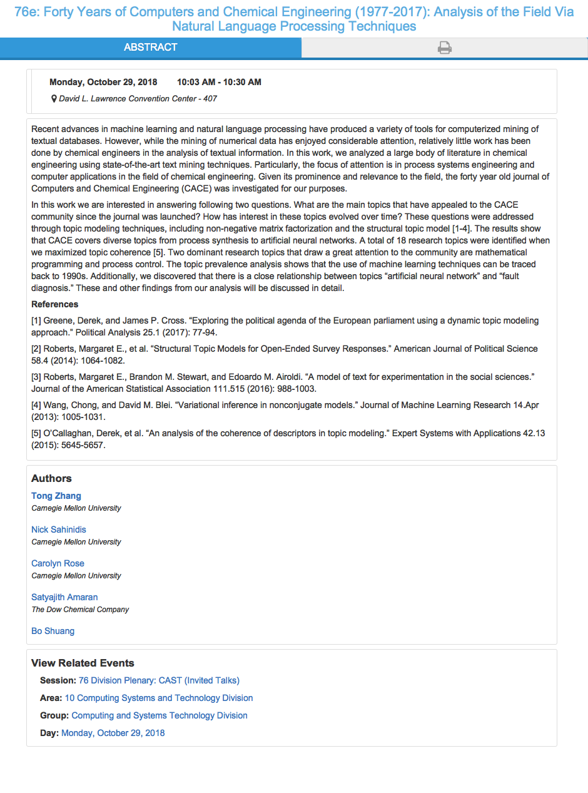
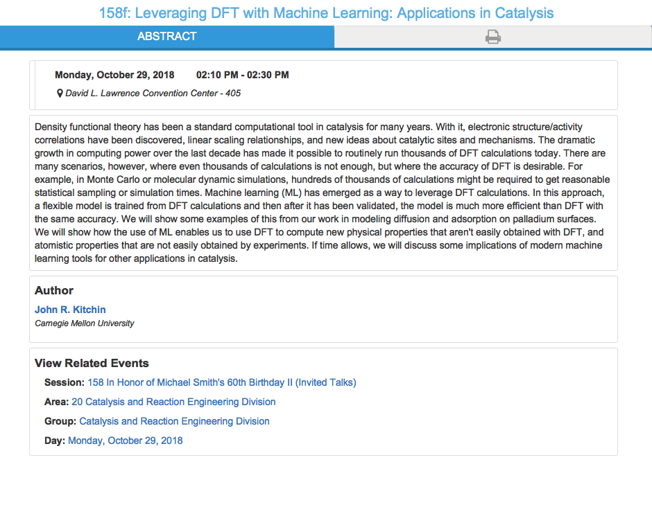
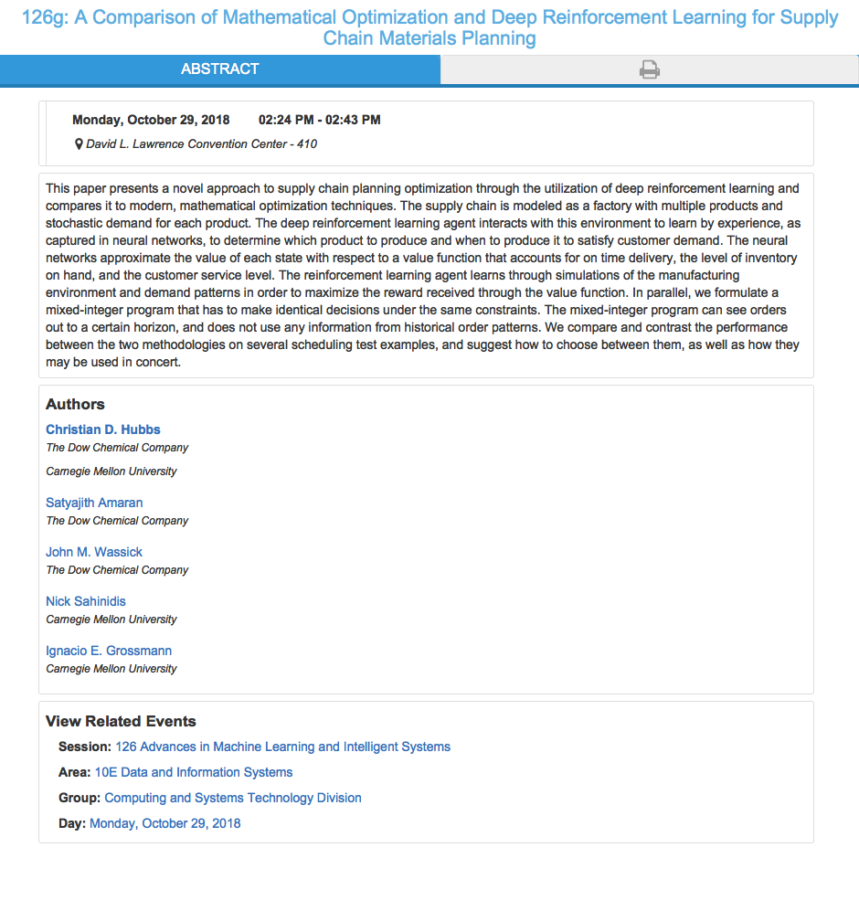
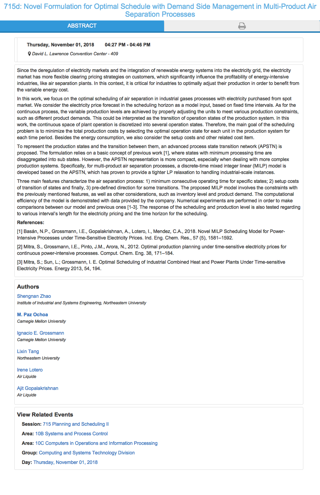

AICHE 2018 Talks and Posters by the Chemical Engineering Department at CMU
Table of Contents
- 1. #AIChEAnnual in #Pittsburgh !
- 2. #AIChEAnnual Here are a few talks from @CMU_Cheme on Sunday @ChEnected tweet thread
- 2.1. 6er: Dynamic Microstructure and Interactions in Complex Fluids Under Flow and Confinement https://aiche.confex.com/aiche/2018/meetingapp.cgi/Paper/542197 #AIChEAnnual #PhdAlum
- 2.2. 6bg: Catalysis Informatics: Accelerating Search and Discovery of New Catalysts https://aiche.confex.com/aiche/2018/meetingapp.cgi/Paper/542295 @jacob_boes @SUNCAT_Center #FacultyCandidate #PhdAlum of @CMU_ChemE
- 2.3. 52a: Multi-Period Design and Planning of Centralized and Distributed Manufacturing Networks https://aiche.confex.com/aiche/2018/meetingapp.cgi/Paper/535345 @crislopeslara @RWTH @AIChECAST10
- 2.4. 24b: Subphase Depth and Surfactant-Driven Marangoni Transport https://aiche.confex.com/aiche/2018/meetingapp.cgi/Paper/528141
- 2.5. 26c: Measuring Changes in Cell Mechanics and Nuclear Rheology Associated with Cellular Transitions in Monolayers Associated with Development https://aiche.confex.com/aiche/2018/meetingapp.cgi/Paper/537043 @krisnoeldahl
- 2.6. 17c: Structure-Function-Dynamics Relationships in Next Generation Protein-Polymer Conjugates https://aiche.confex.com/aiche/2018/meetingapp.cgi/Paper/532740 @DrAlanRussell @MatyPolymerLab
- 2.7. 51c: Plasmoalgorithms, a Collection of Decomposition Algorithms for Graph-Based Problem Representations https://aiche.confex.com/aiche/2018/meetingapp.cgi/Paper/528251 @bbrunaud @AIChECAST10
- 2.8. 52d: Solving Robust Vehicle Routing Via a Branch-Price-and-Cut Approach https://aiche.confex.com/aiche/2018/meetingapp.cgi/Paper/528612 @AIChECAST10
- 2.9. 47d: Microkinetic Analysis of Ethylene Hydrogenation on Pd-Based Catalysts: Effect of Subsurface Hydrogen on Mechanism and Rate Control https://aiche.confex.com/aiche/2018/meetingapp.cgi/Paper/527751 @aiche_cre
- 2.10. 51f: Data Driven Modeling in Alamo: Feature Selection and Non-Parametric Modeling Applications https://aiche.confex.com/aiche/2018/meetingapp.cgi/Paper/526364 @AIChECAST10
- 2.11. 52g: Strategic Time Window Assignment in Vehicle Routing Operations https://aiche.confex.com/aiche/2018/meetingapp.cgi/Paper/527248 @AIChECAST10
- 2.12. Come join us at our reception!
- 3. #AIChEAnnual Here are a few talks from @CMU_Cheme on Monday @ChEnected tweet thread
- 3.1. 99a: Formation and Disruption of a Particle Coating on a Confined Bubble https://aiche.confex.com/aiche/2018/meetingapp.cgi/Paper/533791 @SAnnaLab
- 3.2. 60c: Complex Polymer Architectural Designs for Interfacial Engineering https://aiche.confex.com/aiche/2018/meetingapp.cgi/Paper/540836 #invited
- 3.3. Surface Tension Synergism at Oil-Water Interfaces https://aiche.confex.com/aiche/2018/meetingapp.cgi/Paper/547542 #undergraduate #BergScholar
- 3.4. Multi-System Planning of Shale Gas Development and Production https://aiche.confex.com/aiche/2018/meetingapp.cgi/Paper/547586 #undergraduate #BergScholar
- 3.5. Electrochemical Degradation of Perfluoroalkyl Substances https://aiche.confex.com/aiche/2018/meetingapp.cgi/Paper/547180 @GlowryLowry #undergraduate #BergScholar
- 3.6. Developing Machine Learning Representations of Catalyst Performance https://aiche.confex.com/aiche/2018/meetingapp.cgi/Paper/547599 @UlissiGroup #undergraduate
- 3.7. 76e: Forty Years of Computers and Chemical Engineering (1977-2017): Analysis of the Field Via Natural Language Processing Techniques https://aiche.confex.com/aiche/2018/meetingapp.cgi/Paper/531257 @DowChemical @AIChECAST10
- 3.8. 136a: Novel Approaches for the Integration of Supply Chain Planning and Scheduling https://aiche.confex.com/aiche/2018/meetingapp.cgi/Paper/528569 @bbrunaud @DowChemical @AIChECAST10
- 3.9. 126c: Explore the Potential of Machine Learning in Building Reaction Models for Chemical Industry https://aiche.confex.com/aiche/2018/meetingapp.cgi/Paper/522672 @DowChemical @AIChECAST10
- 3.10. 141d: Ontology-Driven Models and Algorithms for Pharmaceutical R&D Activity Planning https://aiche.confex.com/aiche/2018/meetingapp.cgi/Paper/531507 @Nikos_Lappas @LillyPad
- 3.11. 136e: Identification of Optimal Dopant Patterns in a Doped Perovskite Oxygen Carrier https://aiche.confex.com/aiche/2018/meetingapp.cgi/Paper/535033 @NETL_DOE @AIChECAST10
- 3.12. 158f: Leveraging DFT with Machine Learning: Applications in Catalysis https://aiche.confex.com/aiche/2018/meetingapp.cgi/Paper/529563 @johnkitchin @aiche_cre
- 3.13. 126g: A Comparison of Mathematical Optimization and Deep Reinforcement Learning for Supply Chain Materials Planning https://aiche.confex.com/aiche/2018/meetingapp.cgi/Paper/530734 @christiandhubbs @DowChemical @AIChECAST10
- 3.14. 188do: Contributions of the C-Terminus and Mutations to a2Ar Activity and Stability https://aiche.confex.com/aiche/2018/meetingapp.cgi/Paper/542956 @AnneSkaja
- 3.15. 188dp: Media Supplementation Strategies for Improving Stability and Glycan Quality in Mabs https://aiche.confex.com/aiche/2018/meetingapp.cgi/Paper/542958 @AnneSkaja
- 3.16. 191m: Raspberry-Derived Treatment of Inflammatory Bowel Disease https://aiche.confex.com/aiche/2018/meetingapp.cgi/Paper/536225 @Nick_Lamson @KWhiteheadLab
- 3.17. 190bi: Multiscale Structural Characterization of Epithelial Cell Monolayers Associated with the Addition of Permeability Enhancers for Enhancing Drug Delivery https://aiche.confex.com/aiche/2018/meetingapp.cgi/Paper/532506 @KWhiteheadLab @krisnoeldahl @Nick_Lamson
- 3.18. 190v: Rheological Response of Chromatin to DNA Damage https://aiche.confex.com/aiche/2018/meetingapp.cgi/Paper/524563 @krisnoeldahl
- 3.19. 182h: Autotuning with Derivative-Free Optimization https://aiche.confex.com/aiche/2018/meetingapp.cgi/Paper/530288 @bsauk2 @AIChECAST10
- 3.20. 189i Capturing Non-Ideal Surfactant/Nanoparticle Interfacial Structure with Variable Coverage Molecular Simulations https://aiche.confex.com/aiche/2018/meetingapp.cgi/Paper/526829 @UlissiGroup @aichecomsef
- 3.21. 192c: Impact of Dispersion Stability on Asphaltenes in Bulk and at Oil-Water Interfaces https://aiche.confex.com/aiche/2018/meetingapp.cgi/Paper/528511 @LwalkerCMU
- 3.22. 237v: Effective Viscosity of a Dilute Emulsion of Spherical Drops containing Soluble Surfactant https://aiche.confex.com/aiche/2018/meetingapp.cgi/Paper/543311 @AdityaSKhair1
- 3.23. 194g: Permeation Analysis of Large Molecules to the Surface of Protein-Conjugates with High-Density Polymer Coats https://aiche.confex.com/aiche/2018/meetingapp.cgi/Paper/520868 @DrAlanRussell
- 3.24. 198w: Development of Interfacial Mechanical Strength for Armored Gas Filled Capsules https://aiche.confex.com/aiche/2018/meetingapp.cgi/Paper/534846 @SAnnaLab
- 3.25. 237v: Effective Viscosity of a Dilute Emulsion of Spherical Drops containing Soluble Surfactant https://aiche.confex.com/aiche/2018/meetingapp.cgi/Paper/543311 @AdityaSKhair1 @LwalkerCMU
- 3.26. 190o: In Situ Growth of Acetylcholinesterase-Oxime Polymer Conjugate Scavengers of Organophosphate Nerve Agent Toxicity https://aiche.confex.com/aiche/2018/meetingapp.cgi/Paper/534015 @DrAlanRussell @MatyPolymerLab
- 3.27. 209d: Redesigning the Regulated Power Plant: Optimizing Energy Allocation to Electricity Generation, Carbon Capture, and Water Treatment Processes at Coal-Fired Power Plants https://aiche.confex.com/aiche/2018/meetingapp.cgi/Paper/535982 @DanielGingerich @we3lab
- 3.28. 240f Active Learning across Intermetallics Guides Discovery of Electrocatalysts for Carbon Dioxide Reduction and Hydrogen Evolution https://aiche.confex.com/aiche/2018/meetingapp.cgi/Paper/523436 @UlissiGroup @aiche_cre
- 3.29. 240g Design of Optimal Metallic Surface Reconstructions for Heterogeneous Catalysis https://aiche.confex.com/aiche/2018/meetingapp.cgi/Paper/534923 @UlissiGroup @aiche_cre
- 4. #AICHeAnnual Here are a few talks from @CMU_Cheme on Tuesday @ChEnected tweet thread
- 4.1. 253a: Enhancing Relaxations for Nonconvex Mixed-Integer Quadratically-Constrained Quadratic Programs https://aiche.confex.com/aiche/2018/meetingapp.cgi/Paper/532505 @AIChECAST10
- 4.2. 300b: Integration of Crude-Oil Scheduling and Refinery Planning By Lagrangean Decomposition Approach https://aiche.confex.com/aiche/2018/meetingapp.cgi/Paper/527210 @bernalde
- 4.3. 285a: Synergistic Impact of Polymer/Surfactant Complexation on the Colloidal Depletion Force https://aiche.confex.com/aiche/2018/meetingapp.cgi/Paper/526072
- 4.4. 300b: Integration of Crude-Oil Scheduling and Refinery Planning By Lagrangean Decomposition Approach https://aiche.confex.com/aiche/2018/meetingapp.cgi/Paper/527210 @bernalde
- 4.5. 264b: Silica Nanoparticles Enable Oral Delivery of Insulin https://aiche.confex.com/aiche/2018/meetingapp.cgi/Paper/522263 @Nick_Lamson @KWhiteheadLab
- 4.6. 304b: Sustainable Optimal Strategic Planning for Shale Water Management https://aiche.confex.com/aiche/2018/meetingapp.cgi/Paper/523808 @UA_Universidad
- 4.7. 273c: Stochastic Programming Framework for Electric Power Infrastructure Planning https://aiche.confex.com/aiche/2018/meetingapp.cgi/Paper/536208 @crislopeslara @NETL_DOE @AIChECAST10
- 4.8. 261b: Lipid-like Materials for RNA Delivery: Predicting In Vivo Efficacy https://aiche.confex.com/aiche/2018/meetingapp.cgi/Paper/525836 @KWhiteheadLab
- 4.9. 269d: Overcoming Ammonia Synthesis Scaling Relations with Plasma-Enabled Catalysis https://aiche.confex.com/aiche/2018/meetingapp.cgi/Paper/532015 #MSAlum @prtk_m @profwschneider @aiche_cre
- 4.10. 285h: Effect of Surfactant Structure on Self-Assembly and Charging Processes in Anhydrous Nonpolar Liquids https://aiche.confex.com/aiche/2018/meetingapp.cgi/Paper/536361
- 4.11. 253g: A Novel Branching Scheme for Problems with Reverse Convex Quadratic Constraints and Its Application to Packing Problems https://aiche.confex.com/aiche/2018/meetingapp.cgi/Paper/528773 @AIChECAST10
- 4.12. 273g: Modeling for Reliability Optimization of System Design and Maintenance Based on Markov Chain Theory https://aiche.confex.com/aiche/2018/meetingapp.cgi/Paper/530733 @PraxairInc @AIChECAST10
- 4.13. 343b: From Academia to Industry: Optimization Models for Shale Gas Development https://aiche.confex.com/aiche/2018/meetingapp.cgi/Paper/524592 @EQT_Corporation @AIChECAST10
- 4.14. 325d: Concentrated Dispersion Behavior in Aqueous Particle/Polymer Systems Observed in Microfluidic Devices https://aiche.confex.com/aiche/2018/meetingapp.cgi/Paper/527289 @LwalkerCMU
- 4.15. 353c: Lipid Nanoparticle- Mediated Delivery of Chemically Modified mRNA Significantly Enhances Protein Expression in Mice https://aiche.confex.com/aiche/2018/meetingapp.cgi/Paper/523901 @KWhiteheadLab @Khajj92
- 4.16. 365d: Discovery of Electronics Cooling Fluids https://aiche.confex.com/aiche/2018/meetingapp.cgi/Paper/528218
- 4.17. 343e: Optimization of Circuitry Arrangements for Heat Exchangers https://aiche.confex.com/aiche/2018/meetingapp.cgi/Paper/529957 @Mitsubishi_USA @AIChECAST10
- 4.18. 345f: Applications of Operations Research Methods https://aiche.confex.com/aiche/2018/meetingapp.cgi/Paper/540936 @AIChECAST10
- 4.19. 343g: Robust Multi-Period Vehicle Routing: Construction of Uncertainty Sets and Evaluation Via Rolling-Horizon Simulations https://aiche.confex.com/aiche/2018/meetingapp.cgi/Paper/535475
- 4.20. 367g: Constrained Subset Selection for the Regression of Multi-Component Helmholtz Energy Equations https://aiche.confex.com/aiche/2018/meetingapp.cgi/Paper/530932
- 4.21. 376ac: Effect of Pressure and Spacer Configuration on Assisted Reverse Osmosis Performance https://aiche.confex.com/aiche/2018/meetingapp.cgi/Paper/537030 @we3lab
- 4.22. 393a: A Metaheuristic Approach to Best Subset Selection for the Development of Regression-Based Surrogate Models https://aiche.confex.com/aiche/2018/meetingapp.cgi/Paper/530253 @AIChECAST10
- 4.23. 419a: A Higher-Order Slender-Body Theory for Axisymmetric Flow Past a Particle at Moderate Reynolds Number https://aiche.confex.com/aiche/2018/meetingapp.cgi/Paper/529600 @AdityaSKhair1
- 4.24. 413c: Alloy Catalysis Spanning Composition Space https://aiche.confex.com/aiche/2018/meetingapp.cgi/Paper/531425 @iremsen @aiche_cre
- 4.25. 387d: Award Submission: Lipid Nanoparticle Ionization at Endosomal pH Is a Cell-Free Predictor of mRNA Delivery Efficacy In Vivo https://aiche.confex.com/aiche/2018/meetingapp.cgi/Paper/522740 @Khajj92 @KWhiteheadLab @ChrisKnapp_ @beccaleeball
- 4.26. 412d: Rapid Separation of λDNA Digests in Entangled Micelle Networks https://aiche.confex.com/aiche/2018/meetingapp.cgi/Paper/537649
- 4.27. 421e: Effective Generalized Disjunctive Programming (GDP) Models for Modular Plant Design https://aiche.confex.com/aiche/2018/meetingapp.cgi/Paper/532195 @QtotheC @AIChECAST10
- 4.28. 412g: Dispersion in Steady Two-Dimensional Flows through a Parallel-Plate Channel https://aiche.confex.com/aiche/2018/meetingapp.cgi/Paper/528937 @AdityaSKhair1
- 4.29. 432f: Silica Nanoparticles Act As Permeation Enhancers to Enable Oral Protein Delivery https://aiche.confex.com/aiche/2018/meetingapp.cgi/Paper/541751 @KWhiteheadLab @aichewic
- 4.30. 386i: Graduate Student Award Session: Silica Nanoparticles Enable Oral Delivery of Insulin https://aiche.confex.com/aiche/2018/meetingapp.cgi/Paper/522312 @Nick_Lamson @KWhiteheadLab
- 4.31. You made it this far, don't forget our Dessert and Cocktail Reception!
- 5. #AICHeAnnual Here are a few talks from @CMU_Cheme on Wednesday @ChEnected tweet thread
- 5.1. 456a: Estimating Uncertain Atmospheric Aerosol Dynamics with an Input Observer https://aiche.confex.com/aiche/2018/meetingapp.cgi/Paper/527346 @CAPS_CMU @AIChECAST10
- 5.2. 442a: Measurement of Organic Aerosol Hygroscopicity and Oxidation Level As a Function of Volatility https://aiche.confex.com/aiche/2018/meetingapp.cgi/Paper/528041 @CAPS_CMU
- 5.3. 449b: Symbolic Regression of Alpha Functions for Cubic Equations of State https://aiche.confex.com/aiche/2018/meetingapp.cgi/Paper/530881
- 5.4. 452c: Erythrocytes As Carriers of Immunoglobulin Based Therapeutic Drugs https://aiche.confex.com/aiche/2018/meetingapp.cgi/Paper/535691 @DrAlanRussell
- 5.5. 441c: On Solving Nonconvex Two-Stage Stochastic Programs with Generalized Benders Decomposition https://aiche.confex.com/aiche/2018/meetingapp.cgi/Paper/524155 @AIChECAST10
- 5.6. 441d: New Developments in Flexibility Analysis in the Framework of Design Space Definition https://aiche.confex.com/aiche/2018/meetingapp.cgi/Paper/529193 @LillyPad @AIChECAST10
- 5.7. 455c: Quantifying Shifts in Trace Element Emissions from Coal-Fired Power Plants https://aiche.confex.com/aiche/2018/meetingapp.cgi/Paper/536128 @DanielGingerich @we3lab
- 5.8. 472f: Identification of Optimally Stable Nanoparticle Geometries Via Mathematical Optimization and Density-Functional Theory https://aiche.confex.com/aiche/2018/meetingapp.cgi/Paper/537457 @mpourmpakis_lab @aiche_cre
- 5.9. 452g: Lipid Nanoparticle Formulations for the Synergistic Co-Delivery of siRNA and mRNA https://aiche.confex.com/aiche/2018/meetingapp.cgi/Paper/525835 #Invited @KWhiteheadLab
- 5.10. 441g: An Algorithmic Cutting Plane Method for Solving Robust Optimization Problems with Endogenous Uncertainty https://aiche.confex.com/aiche/2018/meetingapp.cgi/Paper/531460 @Nikos_Lappas @AIChECAST10
- 5.11. 498e: Length-Dependent Uptake, Inflammation, and Intracellular Processing of Single-Walled Carbon Nanotubes in Macrophages https://aiche.confex.com/aiche/2018/meetingapp.cgi/Paper/534121 @krisnoeldahl
- 5.12. 530a: Scheduling with Preemption https://aiche.confex.com/aiche/2018/meetingapp.cgi/Paper/533563 @ABBgroupnews @AIChECAST10
- 5.13. 530f: Batch Scheduling with Quality-Based Changeovers https://aiche.confex.com/aiche/2018/meetingapp.cgi/Paper/528580 @bbrunaud @DowChemical @AIChECAST10
- 5.14. 530g: A Computational Comparison of New Models for the Multi-Mode Resource Constrained Project Scheduling Problem with Optional Activities https://aiche.confex.com/aiche/2018/meetingapp.cgi/Paper/531370 @Nikos_Lappas @AIChECAST10
- 5.15. 544dm: Metal-Oxide Supported Pt Catalysts for Oxygen Reduction Reaction: A Density Functional Theory Approach https://aiche.confex.com/aiche/2018/meetingapp.cgi/Paper/535782 @venkvis @Dilip_Krishnam
- 5.16. 545aw: Technoeconomic Optimization of Emerging Technologies for Regulatory Analysis: NH4HCO3 Forward Osmosis for Power Plant Wastewater Treatment https://aiche.confex.com/aiche/2018/meetingapp.cgi/Paper/536561 @DanielGingerich @we3lab
- 5.17. 544at Prediction of Surface Energies for Complex Pt Structures from Coordination Number and Generalized Coordination Number https://aiche.confex.com/aiche/2018/meetingapp.cgi/Paper/537389 @UlissiGroup @aiche_cre
- 5.18. 544ds Using Data Science to Reduce Large Reaction Networks in Catalysis https://aiche.confex.com/aiche/2018/meetingapp.cgi/Paper/531716 @UlissiGroup @aiche_cre
- 5.19. 544eu: Impact of Polymer-Based Protein Engineered α-Chymotrypsin on Enantioselective Transesterification in Organic Media https://aiche.confex.com/aiche/2018/meetingapp.cgi/Paper/535932 @DrAlanRussell @MatyPolymerLab @aiche_cre
- 5.20. 555b: Lipid Nanoparticle Ionization at Endosomal pH Is a Cell-Free Predictor of mRNA Delivery Efficacy In Vivo https://aiche.confex.com/aiche/2018/meetingapp.cgi/Paper/522523 @Khajj92 @beccaleeball @ChrisKnapp_ @KWhiteheadLab
- 5.21. 559c: Strawberry Polyphenols As Intestinal Permeation Enhancers for Oral Drug Delivery https://aiche.confex.com/aiche/2018/meetingapp.cgi/Paper/534763 @Nick_Lamson @beccaleeball @KWhiteheadLab
- 5.22. 583g: Optimal Mass Exchanger Network Synthesis Using a 2-Step Hybrid Algorithm Including Packed Column Design https://aiche.confex.com/aiche/2018/meetingapp.cgi/Paper/535724 @mchlshort @UCT_news @AIChECAST10
- 5.23. 590f: Dynamics of Adsorption of Rhamnolipid Biosurfactants at Air/water and Oil/water Interfaces https://aiche.confex.com/aiche/2018/meetingapp.cgi/Paper/528813 @LwalkerCMU @SAnnaLab
- 6. #AICHeAnnual Here are a few talks from @CMU_Cheme on Thursday @ChEnected tweet thread
- 6.1. 615f: Interfacial Properties and Spontaneous Emulsification with Block Copolymer Surfactants https://aiche.confex.com/aiche/2018/meetingapp.cgi/Paper/537592 @LwalkerCMU
- 6.2. 620d: Air Emission Reduction Benefits of Biogas Electricity Generation at Municipal Wastewater Treatment Plants https://aiche.confex.com/aiche/2018/meetingapp.cgi/Paper/536186 @DanielGingerich @we3lab
- 6.3. 611g Practical Applications of Machine Learning to Catalyst Design and Discovery https://aiche.confex.com/aiche/2018/meetingapp.cgi/Paper/536780 @UlissiGroup @aichecomsef
- 6.4. 621f: Parameter Estimation of Reaction Kinetics from Spectroscopic Data - Developments and Applications https://aiche.confex.com/aiche/2018/meetingapp.cgi/Paper/530489 @pfizer
- 6.5. 598h: Quadratic Cut Decomposition Method for Convex Mixed-Integer Nonlinear Programs https://aiche.confex.com/aiche/2018/meetingapp.cgi/Paper/527215 @bernalde @AIChECAST10
- 6.6. 668b: Role of Stefan-Maxwell Fluxes in the Dynamics of Concentrated Electrolytes https://aiche.confex.com/aiche/2018/meetingapp.cgi/Paper/524671 @AdityaSKhair1
- 6.7. 653d: Dehydroaromatization of Ethylene over Bifunctional Lewis-Brønsted Acid Pairs in Ag-ZSM-5 https://aiche.confex.com/aiche/2018/meetingapp.cgi/Paper/526494 #MSAlum @sudochemeng @TheGrabowGroup @aiche_cre
- 6.8. 699a: Catkit: Symmetry Methods for Automated Generation of Catalytic Structures https://aiche.confex.com/aiche/2018/meetingapp.cgi/Paper/533449 #PhDAlum @jacob_boes @SUNCAT_Center @aiche_cre
- 6.9. 722b: The Breakup of an Oil Drop Containing a Colloidal Suspension in an Electric Field @AdityaSKhair1 @LwalkerCMU https://aiche.confex.com/aiche/2018/meetingapp.cgi/Paper/527942
- 6.10. 715d: Novel Formulation for Optimal Schedule with Demand Side Management in Multi-Product Air Separation Processes https://aiche.confex.com/aiche/2018/meetingapp.cgi/Paper/525924 @airliquidegroup @AIChECAST10
- 6.11. 699d Methods to Exploit Large Datasets in Catalysis https://aiche.confex.com/aiche/2018/meetingapp.cgi/Paper/528022 @UlissiGroup @aiche_cre
- 6.12. 715e: Multi-Operational Development Planning for Multi-System Shale Gas Production https://aiche.confex.com/aiche/2018/meetingapp.cgi/Paper/524663 @EQTCorp @AIChECAST10
- 6.13. 699f: Quantifying Confidence in DFT Predicted Surface Pourbaix Diagrams at Solid-Liquid Interfaces on Transition Metal Surfaces https://aiche.confex.com/aiche/2018/meetingapp.cgi/Paper/529093 @Dilip_Krishnam @venkvis
- 6.14. 727f: Quantification of Thermal Energy Delivery to Water-Membrane Interface in Membrane Distillation https://aiche.confex.com/aiche/2018/meetingapp.cgi/Paper/534972 @we3lab
- 7. #AICHeAnnual Here are a few talks from @CMU_Cheme on Friday @ChEnected tweet thread
- 7.1. 732a: Accurate Adsorbate Free Energies from First-Principles https://aiche.confex.com/aiche/2018/meetingapp.cgi/Paper/529098 #MSAlum @prtk_m @profwschneider @aiche_cre
- 7.2. 728a: Ensemble Models for Univariate Time Series Forecasting https://aiche.confex.com/aiche/2018/meetingapp.cgi/Paper/532401 @BradJChemE @AIChECAST10
- 7.3. 743e: Cost Optimization of Osmotically Assisted Reverse Osmosis https://aiche.confex.com/aiche/2018/meetingapp.cgi/Paper/537409 @we3lab
- 7.4. 733f: Accelerating the Generation of Coal Power Plant Property Models https://aiche.confex.com/aiche/2018/meetingapp.cgi/Paper/530255 @bsauk2 @AIChECAST10
- 7.5. 734g: Finite Element Modeling and Optimization of Heat Exchangers https://aiche.confex.com/aiche/2018/meetingapp.cgi/Paper/521550 @AIChECAST10
- 7.6. 732g: Kinetics and Mechanism of Aspartic Acid Adsorption and Its Explosive Decomposition on Cu(100) https://aiche.confex.com/aiche/2018/meetingapp.cgi/Paper/523551 @BrcKaragoz @aiche_cre
- 7.7. 752d: Methods for Direct Surface Temperature Measurement for Quantification of Membrane Distillation Process Performance https://aiche.confex.com/aiche/2018/meetingapp.cgi/Paper/534160 @we3lab
- 7.8. 748e: Adaptive Control of System with Unknown Inputs with Application to Chemical Reaction Control https://aiche.confex.com/aiche/2018/meetingapp.cgi/Paper/535412 @AIChECAST10
1 #AIChEAnnual in #Pittsburgh !

2 #AIChEAnnual Here are a few talks from @CMU_Cheme on Sunday @ChEnected tweet thread
2.1 6er: Dynamic Microstructure and Interactions in Complex Fluids Under Flow and Confinement https://aiche.confex.com/aiche/2018/meetingapp.cgi/Paper/542197 #AIChEAnnual #PhdAlum

2.2 6bg: Catalysis Informatics: Accelerating Search and Discovery of New Catalysts https://aiche.confex.com/aiche/2018/meetingapp.cgi/Paper/542295 @jacob_boes @SUNCAT_Center #FacultyCandidate #PhdAlum of @CMU_ChemE

2.3 52a: Multi-Period Design and Planning of Centralized and Distributed Manufacturing Networks https://aiche.confex.com/aiche/2018/meetingapp.cgi/Paper/535345 @crislopeslara @RWTH @AIChECAST10

2.4 24b: Subphase Depth and Surfactant-Driven Marangoni Transport https://aiche.confex.com/aiche/2018/meetingapp.cgi/Paper/528141
2.5 26c: Measuring Changes in Cell Mechanics and Nuclear Rheology Associated with Cellular Transitions in Monolayers Associated with Development https://aiche.confex.com/aiche/2018/meetingapp.cgi/Paper/537043 @krisnoeldahl
2.6 17c: Structure-Function-Dynamics Relationships in Next Generation Protein-Polymer Conjugates https://aiche.confex.com/aiche/2018/meetingapp.cgi/Paper/532740 @DrAlanRussell @MatyPolymerLab

2.7 51c: Plasmoalgorithms, a Collection of Decomposition Algorithms for Graph-Based Problem Representations https://aiche.confex.com/aiche/2018/meetingapp.cgi/Paper/528251 @bbrunaud @AIChECAST10

2.8 52d: Solving Robust Vehicle Routing Via a Branch-Price-and-Cut Approach https://aiche.confex.com/aiche/2018/meetingapp.cgi/Paper/528612 @AIChECAST10

2.9 47d: Microkinetic Analysis of Ethylene Hydrogenation on Pd-Based Catalysts: Effect of Subsurface Hydrogen on Mechanism and Rate Control https://aiche.confex.com/aiche/2018/meetingapp.cgi/Paper/527751 @aiche_cre

2.10 51f: Data Driven Modeling in Alamo: Feature Selection and Non-Parametric Modeling Applications https://aiche.confex.com/aiche/2018/meetingapp.cgi/Paper/526364 @AIChECAST10

2.11 52g: Strategic Time Window Assignment in Vehicle Routing Operations https://aiche.confex.com/aiche/2018/meetingapp.cgi/Paper/527248 @AIChECAST10
2.12 Come join us at our reception!
3 #AIChEAnnual Here are a few talks from @CMU_Cheme on Monday @ChEnected tweet thread
3.1 99a: Formation and Disruption of a Particle Coating on a Confined Bubble https://aiche.confex.com/aiche/2018/meetingapp.cgi/Paper/533791 @SAnnaLab

3.2 60c: Complex Polymer Architectural Designs for Interfacial Engineering https://aiche.confex.com/aiche/2018/meetingapp.cgi/Paper/540836 #invited

3.3 Surface Tension Synergism at Oil-Water Interfaces https://aiche.confex.com/aiche/2018/meetingapp.cgi/Paper/547542 #undergraduate #BergScholar

3.4 Multi-System Planning of Shale Gas Development and Production https://aiche.confex.com/aiche/2018/meetingapp.cgi/Paper/547586 #undergraduate #BergScholar

3.5 Electrochemical Degradation of Perfluoroalkyl Substances https://aiche.confex.com/aiche/2018/meetingapp.cgi/Paper/547180 @GlowryLowry #undergraduate #BergScholar

3.6 Developing Machine Learning Representations of Catalyst Performance https://aiche.confex.com/aiche/2018/meetingapp.cgi/Paper/547599 @UlissiGroup #undergraduate
3.7 76e: Forty Years of Computers and Chemical Engineering (1977-2017): Analysis of the Field Via Natural Language Processing Techniques https://aiche.confex.com/aiche/2018/meetingapp.cgi/Paper/531257 @DowChemical @AIChECAST10

3.8 136a: Novel Approaches for the Integration of Supply Chain Planning and Scheduling https://aiche.confex.com/aiche/2018/meetingapp.cgi/Paper/528569 @bbrunaud @DowChemical @AIChECAST10
3.9 126c: Explore the Potential of Machine Learning in Building Reaction Models for Chemical Industry https://aiche.confex.com/aiche/2018/meetingapp.cgi/Paper/522672 @DowChemical @AIChECAST10

3.10 141d: Ontology-Driven Models and Algorithms for Pharmaceutical R&D Activity Planning https://aiche.confex.com/aiche/2018/meetingapp.cgi/Paper/531507 @Nikos_Lappas @LillyPad
3.11 136e: Identification of Optimal Dopant Patterns in a Doped Perovskite Oxygen Carrier https://aiche.confex.com/aiche/2018/meetingapp.cgi/Paper/535033 @NETL_DOE @AIChECAST10
3.12 158f: Leveraging DFT with Machine Learning: Applications in Catalysis https://aiche.confex.com/aiche/2018/meetingapp.cgi/Paper/529563 @johnkitchin @aiche_cre

3.13 126g: A Comparison of Mathematical Optimization and Deep Reinforcement Learning for Supply Chain Materials Planning https://aiche.confex.com/aiche/2018/meetingapp.cgi/Paper/530734 @christiandhubbs @DowChemical @AIChECAST10

3.14 188do: Contributions of the C-Terminus and Mutations to a2Ar Activity and Stability https://aiche.confex.com/aiche/2018/meetingapp.cgi/Paper/542956 @AnneSkaja
3.15 188dp: Media Supplementation Strategies for Improving Stability and Glycan Quality in Mabs https://aiche.confex.com/aiche/2018/meetingapp.cgi/Paper/542958 @AnneSkaja
3.16 191m: Raspberry-Derived Treatment of Inflammatory Bowel Disease https://aiche.confex.com/aiche/2018/meetingapp.cgi/Paper/536225 @Nick_Lamson @KWhiteheadLab
3.17 190bi: Multiscale Structural Characterization of Epithelial Cell Monolayers Associated with the Addition of Permeability Enhancers for Enhancing Drug Delivery https://aiche.confex.com/aiche/2018/meetingapp.cgi/Paper/532506 @KWhiteheadLab @krisnoeldahl @Nick_Lamson
3.18 190v: Rheological Response of Chromatin to DNA Damage https://aiche.confex.com/aiche/2018/meetingapp.cgi/Paper/524563 @krisnoeldahl
3.19 182h: Autotuning with Derivative-Free Optimization https://aiche.confex.com/aiche/2018/meetingapp.cgi/Paper/530288 @bsauk2 @AIChECAST10
3.20 189i Capturing Non-Ideal Surfactant/Nanoparticle Interfacial Structure with Variable Coverage Molecular Simulations https://aiche.confex.com/aiche/2018/meetingapp.cgi/Paper/526829 @UlissiGroup @aichecomsef

3.21 192c: Impact of Dispersion Stability on Asphaltenes in Bulk and at Oil-Water Interfaces https://aiche.confex.com/aiche/2018/meetingapp.cgi/Paper/528511 @LwalkerCMU

3.22 237v: Effective Viscosity of a Dilute Emulsion of Spherical Drops containing Soluble Surfactant https://aiche.confex.com/aiche/2018/meetingapp.cgi/Paper/543311 @AdityaSKhair1
3.23 194g: Permeation Analysis of Large Molecules to the Surface of Protein-Conjugates with High-Density Polymer Coats https://aiche.confex.com/aiche/2018/meetingapp.cgi/Paper/520868 @DrAlanRussell

3.24 198w: Development of Interfacial Mechanical Strength for Armored Gas Filled Capsules https://aiche.confex.com/aiche/2018/meetingapp.cgi/Paper/534846 @SAnnaLab

3.25 237v: Effective Viscosity of a Dilute Emulsion of Spherical Drops containing Soluble Surfactant https://aiche.confex.com/aiche/2018/meetingapp.cgi/Paper/543311 @AdityaSKhair1 @LwalkerCMU
3.26 190o: In Situ Growth of Acetylcholinesterase-Oxime Polymer Conjugate Scavengers of Organophosphate Nerve Agent Toxicity https://aiche.confex.com/aiche/2018/meetingapp.cgi/Paper/534015 @DrAlanRussell @MatyPolymerLab
3.27 209d: Redesigning the Regulated Power Plant: Optimizing Energy Allocation to Electricity Generation, Carbon Capture, and Water Treatment Processes at Coal-Fired Power Plants https://aiche.confex.com/aiche/2018/meetingapp.cgi/Paper/535982 @DanielGingerich @we3lab
3.28 240f Active Learning across Intermetallics Guides Discovery of Electrocatalysts for Carbon Dioxide Reduction and Hydrogen Evolution https://aiche.confex.com/aiche/2018/meetingapp.cgi/Paper/523436 @UlissiGroup @aiche_cre

3.29 240g Design of Optimal Metallic Surface Reconstructions for Heterogeneous Catalysis https://aiche.confex.com/aiche/2018/meetingapp.cgi/Paper/534923 @UlissiGroup @aiche_cre
4 #AICHeAnnual Here are a few talks from @CMU_Cheme on Tuesday @ChEnected tweet thread
4.1 253a: Enhancing Relaxations for Nonconvex Mixed-Integer Quadratically-Constrained Quadratic Programs https://aiche.confex.com/aiche/2018/meetingapp.cgi/Paper/532505 @AIChECAST10

4.2 300b: Integration of Crude-Oil Scheduling and Refinery Planning By Lagrangean Decomposition Approach https://aiche.confex.com/aiche/2018/meetingapp.cgi/Paper/527210 @bernalde

4.3 285a: Synergistic Impact of Polymer/Surfactant Complexation on the Colloidal Depletion Force https://aiche.confex.com/aiche/2018/meetingapp.cgi/Paper/526072

4.4 300b: Integration of Crude-Oil Scheduling and Refinery Planning By Lagrangean Decomposition Approach https://aiche.confex.com/aiche/2018/meetingapp.cgi/Paper/527210 @bernalde
4.5 264b: Silica Nanoparticles Enable Oral Delivery of Insulin https://aiche.confex.com/aiche/2018/meetingapp.cgi/Paper/522263 @Nick_Lamson @KWhiteheadLab

4.6 304b: Sustainable Optimal Strategic Planning for Shale Water Management https://aiche.confex.com/aiche/2018/meetingapp.cgi/Paper/523808 @UA_Universidad
4.7 273c: Stochastic Programming Framework for Electric Power Infrastructure Planning https://aiche.confex.com/aiche/2018/meetingapp.cgi/Paper/536208 @crislopeslara @NETL_DOE @AIChECAST10
and my twitter account is https://twitter.com/crislopeslara https://twitter.com/crislopeslara @crislopeslara )
4.8 261b: Lipid-like Materials for RNA Delivery: Predicting In Vivo Efficacy https://aiche.confex.com/aiche/2018/meetingapp.cgi/Paper/525836 @KWhiteheadLab
4.9 269d: Overcoming Ammonia Synthesis Scaling Relations with Plasma-Enabled Catalysis https://aiche.confex.com/aiche/2018/meetingapp.cgi/Paper/532015 #MSAlum @prtk_m @profwschneider @aiche_cre

4.10 285h: Effect of Surfactant Structure on Self-Assembly and Charging Processes in Anhydrous Nonpolar Liquids https://aiche.confex.com/aiche/2018/meetingapp.cgi/Paper/536361
4.11 253g: A Novel Branching Scheme for Problems with Reverse Convex Quadratic Constraints and Its Application to Packing Problems https://aiche.confex.com/aiche/2018/meetingapp.cgi/Paper/528773 @AIChECAST10
4.12 273g: Modeling for Reliability Optimization of System Design and Maintenance Based on Markov Chain Theory https://aiche.confex.com/aiche/2018/meetingapp.cgi/Paper/530733 @PraxairInc @AIChECAST10
4.13 343b: From Academia to Industry: Optimization Models for Shale Gas Development https://aiche.confex.com/aiche/2018/meetingapp.cgi/Paper/524592 @EQT_Corporation @AIChECAST10

4.14 325d: Concentrated Dispersion Behavior in Aqueous Particle/Polymer Systems Observed in Microfluidic Devices https://aiche.confex.com/aiche/2018/meetingapp.cgi/Paper/527289 @LwalkerCMU
4.15 353c: Lipid Nanoparticle- Mediated Delivery of Chemically Modified mRNA Significantly Enhances Protein Expression in Mice https://aiche.confex.com/aiche/2018/meetingapp.cgi/Paper/523901 @KWhiteheadLab @Khajj92

4.16 365d: Discovery of Electronics Cooling Fluids https://aiche.confex.com/aiche/2018/meetingapp.cgi/Paper/528218
4.17 343e: Optimization of Circuitry Arrangements for Heat Exchangers https://aiche.confex.com/aiche/2018/meetingapp.cgi/Paper/529957 @Mitsubishi_USA @AIChECAST10

4.18 345f: Applications of Operations Research Methods https://aiche.confex.com/aiche/2018/meetingapp.cgi/Paper/540936 @AIChECAST10

4.19 343g: Robust Multi-Period Vehicle Routing: Construction of Uncertainty Sets and Evaluation Via Rolling-Horizon Simulations https://aiche.confex.com/aiche/2018/meetingapp.cgi/Paper/535475
4.20 367g: Constrained Subset Selection for the Regression of Multi-Component Helmholtz Energy Equations https://aiche.confex.com/aiche/2018/meetingapp.cgi/Paper/530932

4.21 376ac: Effect of Pressure and Spacer Configuration on Assisted Reverse Osmosis Performance https://aiche.confex.com/aiche/2018/meetingapp.cgi/Paper/537030 @we3lab
4.22 393a: A Metaheuristic Approach to Best Subset Selection for the Development of Regression-Based Surrogate Models https://aiche.confex.com/aiche/2018/meetingapp.cgi/Paper/530253 @AIChECAST10
4.23 419a: A Higher-Order Slender-Body Theory for Axisymmetric Flow Past a Particle at Moderate Reynolds Number https://aiche.confex.com/aiche/2018/meetingapp.cgi/Paper/529600 @AdityaSKhair1

4.24 413c: Alloy Catalysis Spanning Composition Space https://aiche.confex.com/aiche/2018/meetingapp.cgi/Paper/531425 @iremsen @aiche_cre

4.25 387d: Award Submission: Lipid Nanoparticle Ionization at Endosomal pH Is a Cell-Free Predictor of mRNA Delivery Efficacy In Vivo https://aiche.confex.com/aiche/2018/meetingapp.cgi/Paper/522740 @Khajj92 @KWhiteheadLab @ChrisKnapp_ @beccaleeball
4.26 412d: Rapid Separation of λDNA Digests in Entangled Micelle Networks https://aiche.confex.com/aiche/2018/meetingapp.cgi/Paper/537649
4.27 421e: Effective Generalized Disjunctive Programming (GDP) Models for Modular Plant Design https://aiche.confex.com/aiche/2018/meetingapp.cgi/Paper/532195 @QtotheC @AIChECAST10

4.28 412g: Dispersion in Steady Two-Dimensional Flows through a Parallel-Plate Channel https://aiche.confex.com/aiche/2018/meetingapp.cgi/Paper/528937 @AdityaSKhair1

4.29 432f: Silica Nanoparticles Act As Permeation Enhancers to Enable Oral Protein Delivery https://aiche.confex.com/aiche/2018/meetingapp.cgi/Paper/541751 @KWhiteheadLab @aichewic

4.30 386i: Graduate Student Award Session: Silica Nanoparticles Enable Oral Delivery of Insulin https://aiche.confex.com/aiche/2018/meetingapp.cgi/Paper/522312 @Nick_Lamson @KWhiteheadLab

4.31 You made it this far, don't forget our Dessert and Cocktail Reception!

5 #AICHeAnnual Here are a few talks from @CMU_Cheme on Wednesday @ChEnected tweet thread
5.1 456a: Estimating Uncertain Atmospheric Aerosol Dynamics with an Input Observer https://aiche.confex.com/aiche/2018/meetingapp.cgi/Paper/527346 @CAPS_CMU @AIChECAST10
5.2 442a: Measurement of Organic Aerosol Hygroscopicity and Oxidation Level As a Function of Volatility https://aiche.confex.com/aiche/2018/meetingapp.cgi/Paper/528041 @CAPS_CMU

5.3 449b: Symbolic Regression of Alpha Functions for Cubic Equations of State https://aiche.confex.com/aiche/2018/meetingapp.cgi/Paper/530881

5.4 452c: Erythrocytes As Carriers of Immunoglobulin Based Therapeutic Drugs https://aiche.confex.com/aiche/2018/meetingapp.cgi/Paper/535691 @DrAlanRussell

5.5 441c: On Solving Nonconvex Two-Stage Stochastic Programs with Generalized Benders Decomposition https://aiche.confex.com/aiche/2018/meetingapp.cgi/Paper/524155 @AIChECAST10
5.6 441d: New Developments in Flexibility Analysis in the Framework of Design Space Definition https://aiche.confex.com/aiche/2018/meetingapp.cgi/Paper/529193 @LillyPad @AIChECAST10

5.7 455c: Quantifying Shifts in Trace Element Emissions from Coal-Fired Power Plants https://aiche.confex.com/aiche/2018/meetingapp.cgi/Paper/536128 @DanielGingerich @we3lab
5.8 472f: Identification of Optimally Stable Nanoparticle Geometries Via Mathematical Optimization and Density-Functional Theory https://aiche.confex.com/aiche/2018/meetingapp.cgi/Paper/537457 @mpourmpakis_lab @aiche_cre

5.9 452g: Lipid Nanoparticle Formulations for the Synergistic Co-Delivery of siRNA and mRNA https://aiche.confex.com/aiche/2018/meetingapp.cgi/Paper/525835 #Invited @KWhiteheadLab

5.10 441g: An Algorithmic Cutting Plane Method for Solving Robust Optimization Problems with Endogenous Uncertainty https://aiche.confex.com/aiche/2018/meetingapp.cgi/Paper/531460 @Nikos_Lappas @AIChECAST10
5.11 498e: Length-Dependent Uptake, Inflammation, and Intracellular Processing of Single-Walled Carbon Nanotubes in Macrophages https://aiche.confex.com/aiche/2018/meetingapp.cgi/Paper/534121 @krisnoeldahl
5.12 530a: Scheduling with Preemption https://aiche.confex.com/aiche/2018/meetingapp.cgi/Paper/533563 @ABBgroupnews @AIChECAST10

5.13 530f: Batch Scheduling with Quality-Based Changeovers https://aiche.confex.com/aiche/2018/meetingapp.cgi/Paper/528580 @bbrunaud @DowChemical @AIChECAST10

5.14 530g: A Computational Comparison of New Models for the Multi-Mode Resource Constrained Project Scheduling Problem with Optional Activities https://aiche.confex.com/aiche/2018/meetingapp.cgi/Paper/531370 @Nikos_Lappas @AIChECAST10
5.15 544dm: Metal-Oxide Supported Pt Catalysts for Oxygen Reduction Reaction: A Density Functional Theory Approach https://aiche.confex.com/aiche/2018/meetingapp.cgi/Paper/535782 @venkvis @Dilip_Krishnam
5.16 545aw: Technoeconomic Optimization of Emerging Technologies for Regulatory Analysis: NH4HCO3 Forward Osmosis for Power Plant Wastewater Treatment https://aiche.confex.com/aiche/2018/meetingapp.cgi/Paper/536561 @DanielGingerich @we3lab
5.17 544at Prediction of Surface Energies for Complex Pt Structures from Coordination Number and Generalized Coordination Number https://aiche.confex.com/aiche/2018/meetingapp.cgi/Paper/537389 @UlissiGroup @aiche_cre
5.18 544ds Using Data Science to Reduce Large Reaction Networks in Catalysis https://aiche.confex.com/aiche/2018/meetingapp.cgi/Paper/531716 @UlissiGroup @aiche_cre

5.19 544eu: Impact of Polymer-Based Protein Engineered α-Chymotrypsin on Enantioselective Transesterification in Organic Media https://aiche.confex.com/aiche/2018/meetingapp.cgi/Paper/535932 @DrAlanRussell @MatyPolymerLab @aiche_cre

5.20 555b: Lipid Nanoparticle Ionization at Endosomal pH Is a Cell-Free Predictor of mRNA Delivery Efficacy In Vivo https://aiche.confex.com/aiche/2018/meetingapp.cgi/Paper/522523 @Khajj92 @beccaleeball @ChrisKnapp_ @KWhiteheadLab
5.21 559c: Strawberry Polyphenols As Intestinal Permeation Enhancers for Oral Drug Delivery https://aiche.confex.com/aiche/2018/meetingapp.cgi/Paper/534763 @Nick_Lamson @beccaleeball @KWhiteheadLab

5.22 583g: Optimal Mass Exchanger Network Synthesis Using a 2-Step Hybrid Algorithm Including Packed Column Design https://aiche.confex.com/aiche/2018/meetingapp.cgi/Paper/535724 @mchlshort @UCT_news @AIChECAST10
5.23 590f: Dynamics of Adsorption of Rhamnolipid Biosurfactants at Air/water and Oil/water Interfaces https://aiche.confex.com/aiche/2018/meetingapp.cgi/Paper/528813 @LwalkerCMU @SAnnaLab

6 #AICHeAnnual Here are a few talks from @CMU_Cheme on Thursday @ChEnected tweet thread
6.1 615f: Interfacial Properties and Spontaneous Emulsification with Block Copolymer Surfactants https://aiche.confex.com/aiche/2018/meetingapp.cgi/Paper/537592 @LwalkerCMU
6.2 620d: Air Emission Reduction Benefits of Biogas Electricity Generation at Municipal Wastewater Treatment Plants https://aiche.confex.com/aiche/2018/meetingapp.cgi/Paper/536186 @DanielGingerich @we3lab

6.3 611g Practical Applications of Machine Learning to Catalyst Design and Discovery https://aiche.confex.com/aiche/2018/meetingapp.cgi/Paper/536780 @UlissiGroup @aichecomsef
6.4 621f: Parameter Estimation of Reaction Kinetics from Spectroscopic Data - Developments and Applications https://aiche.confex.com/aiche/2018/meetingapp.cgi/Paper/530489 @pfizer

6.5 598h: Quadratic Cut Decomposition Method for Convex Mixed-Integer Nonlinear Programs https://aiche.confex.com/aiche/2018/meetingapp.cgi/Paper/527215 @bernalde @AIChECAST10
6.6 668b: Role of Stefan-Maxwell Fluxes in the Dynamics of Concentrated Electrolytes https://aiche.confex.com/aiche/2018/meetingapp.cgi/Paper/524671 @AdityaSKhair1

6.7 653d: Dehydroaromatization of Ethylene over Bifunctional Lewis-Brønsted Acid Pairs in Ag-ZSM-5 https://aiche.confex.com/aiche/2018/meetingapp.cgi/Paper/526494 #MSAlum @sudochemeng @TheGrabowGroup @aiche_cre
6.8 699a: Catkit: Symmetry Methods for Automated Generation of Catalytic Structures https://aiche.confex.com/aiche/2018/meetingapp.cgi/Paper/533449 #PhDAlum @jacob_boes @SUNCAT_Center @aiche_cre

6.9 722b: The Breakup of an Oil Drop Containing a Colloidal Suspension in an Electric Field @AdityaSKhair1 @LwalkerCMU https://aiche.confex.com/aiche/2018/meetingapp.cgi/Paper/527942
6.10 715d: Novel Formulation for Optimal Schedule with Demand Side Management in Multi-Product Air Separation Processes https://aiche.confex.com/aiche/2018/meetingapp.cgi/Paper/525924 @airliquidegroup @AIChECAST10

6.11 699d Methods to Exploit Large Datasets in Catalysis https://aiche.confex.com/aiche/2018/meetingapp.cgi/Paper/528022 @UlissiGroup @aiche_cre

6.12 715e: Multi-Operational Development Planning for Multi-System Shale Gas Production https://aiche.confex.com/aiche/2018/meetingapp.cgi/Paper/524663 @EQTCorp @AIChECAST10
6.13 699f: Quantifying Confidence in DFT Predicted Surface Pourbaix Diagrams at Solid-Liquid Interfaces on Transition Metal Surfaces https://aiche.confex.com/aiche/2018/meetingapp.cgi/Paper/529093 @Dilip_Krishnam @venkvis
6.14 727f: Quantification of Thermal Energy Delivery to Water-Membrane Interface in Membrane Distillation https://aiche.confex.com/aiche/2018/meetingapp.cgi/Paper/534972 @we3lab

7 #AICHeAnnual Here are a few talks from @CMU_Cheme on Friday @ChEnected tweet thread
7.1 732a: Accurate Adsorbate Free Energies from First-Principles https://aiche.confex.com/aiche/2018/meetingapp.cgi/Paper/529098 #MSAlum @prtk_m @profwschneider @aiche_cre
7.2 728a: Ensemble Models for Univariate Time Series Forecasting https://aiche.confex.com/aiche/2018/meetingapp.cgi/Paper/532401 @BradJChemE @AIChECAST10
7.3 743e: Cost Optimization of Osmotically Assisted Reverse Osmosis https://aiche.confex.com/aiche/2018/meetingapp.cgi/Paper/537409 @we3lab
7.4 733f: Accelerating the Generation of Coal Power Plant Property Models https://aiche.confex.com/aiche/2018/meetingapp.cgi/Paper/530255 @bsauk2 @AIChECAST10

7.5 734g: Finite Element Modeling and Optimization of Heat Exchangers https://aiche.confex.com/aiche/2018/meetingapp.cgi/Paper/521550 @AIChECAST10
7.6 732g: Kinetics and Mechanism of Aspartic Acid Adsorption and Its Explosive Decomposition on Cu(100) https://aiche.confex.com/aiche/2018/meetingapp.cgi/Paper/523551 @BrcKaragoz @aiche_cre

7.7 752d: Methods for Direct Surface Temperature Measurement for Quantification of Membrane Distillation Process Performance https://aiche.confex.com/aiche/2018/meetingapp.cgi/Paper/534160 @we3lab
7.8 748e: Adaptive Control of System with Unknown Inputs with Application to Chemical Reaction Control https://aiche.confex.com/aiche/2018/meetingapp.cgi/Paper/535412 @AIChECAST10